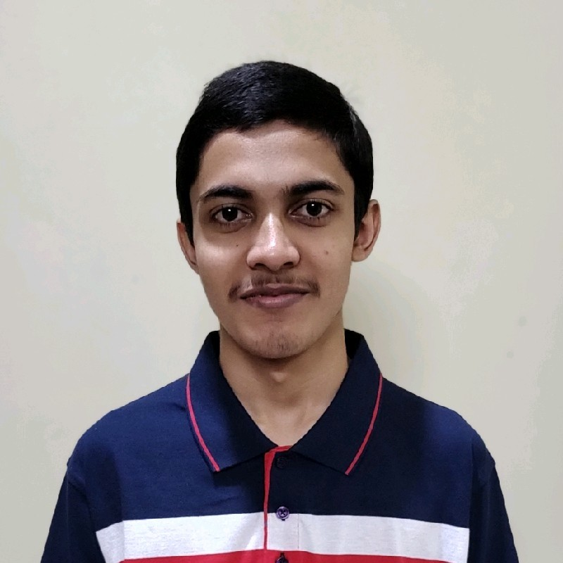

A web developer from HCLtech
I am an Analyst in the HCLtech with a lot of skills in the Azure Cloud Administration and Linux. Currently, I am an aspirant of the DevOPS Engineer role.
Ramakrishna Mission Vidyalaya, Agartala, India
(Click on this link to visit the website)
Bachelor of Science IT (Design and Computing)
(2024 - 2028)
Birla Institute of Technology and Science, Pilani, India
Click here to know more
October 2023 - Present
© Devjoy Chakraborty | All rights reserved.